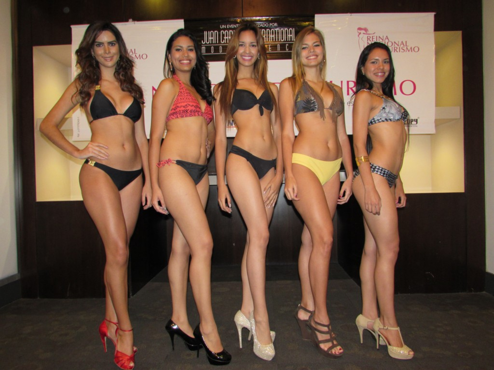
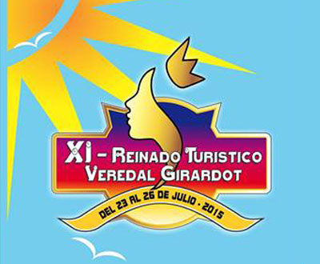
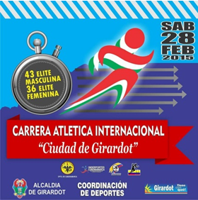

XLV Reinado Nacional del Turismo 2015
- Feb 14, 2015
Girardot, Cundinamarca se prepara para vivir su mejor fiesta del año del 5 al 12 de octubre de 2015, la versión XLV del Reinado Nacional del Turismo.
Leer Más

XI Reinado Turistico Veredal Girardot 2015
- Agos 4, 2015
El Instituto Municipal de Turismo, Cultura y Fomento, a través de la Coordinación de Turismo, ha confirmado la programación de actividades para la undécima versión del Reinado Turístico Veredal 2015.
Leer Más

Carrera Atletica Ciudad de Girardot 2014
- Agos 4, 2015
Este sábado 09 de febrero se cumplirá la Carrera Atlética Internacional Ciudad de Girardot, el evento más antiguo del calendario de la Federación Colombiana de Atletismo.
Leer Más